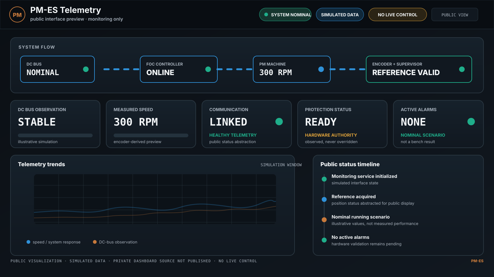

Published
The monitoring categories, safety philosophy, validation status and a sanitized visual preview.
Monitoring interface · Public preview
A public, monitoring-only visualization of the Raspberry Pi companion interface for system observation, diagnostics and event review.

Observation scope
Publication boundary
The monitoring categories, safety philosophy, validation status and a sanitized visual preview.
The private application source, binary frame layout, pin assignments, exact protection thresholds, credentials and deployment configuration.
The Raspberry Pi remains a monitoring companion in the current public scope. Autonomous hardware protection is not delegated to the dashboard.
Feedback on observability, diagnostic presentation, experimental methodology and human-machine interface design is welcome within the public project boundary.